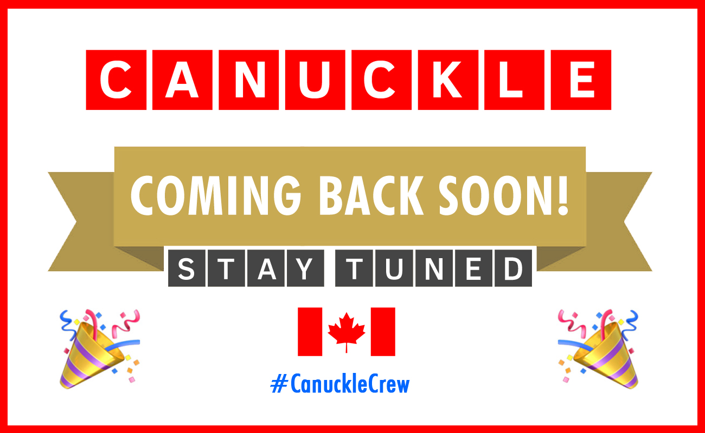

Canuckle is COMING BACK SOON!
Stay tuned for details of the relaunch!
Stay tuned for details of the relaunch!
|
While you are waiting:
Thanks hosers! Until we play again!
|
|  | ||||
|
Canuckle is COMING BACK SOON!
Stay tuned for details of the relaunch! | ||||
| ||||